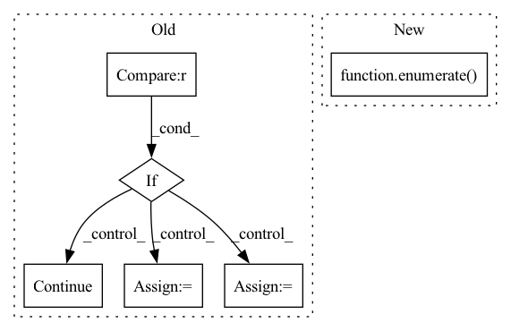

Pattern ID :40860
Before Change
for conf in mol["conformations"].values():
// Skip failed calculations
if "formation_energy" not in conf :
continue
assert conf["positions"].attrs["units"] == "Å"
pos = pt.tensor(conf["positions"], dtype=pt.float32)
assert pos.shape == (z.shape[0], 3)
assert conf["formation_energy"].attrs["units"] == "eV"
y = pt.tensor(conf["formation_energy"][()], dtype=pt.float64)
assert y.shape == ()
assert conf["forces"].attrs["units"] == "eV/Å"
dy = -pt.tensor(conf["forces"], dtype=pt.float32)
assert dy.shape == pos.shape
assert conf["partial_charges"].attrs["units"] == "e"After Change
// Iterate over the molecules
for i_mol, (mol_id, mol) in tqdm(
enumerate( mols) ,
desc="Molecules",
total=len(mols),
leave=False,In pattern: SUPERPATTERN
Frequency: 3
Non-data size: 6
Instances Fragment ID: 115268126
Project Name: torchmd/torchmd-net
Commit Name: d23e6500f2cef1fa56d6c99ce5fdb983f1379bca
Time: 2022-10-28
Author: peastman@stanford.edu
File Name: torchmdnet/datasets/ace.py
M Class Name: Ace
N Class Name: Ace
M Method Name: sample_iter(2)
N Method Name: sample_iter(1)
M Parent Class: Dataset
N Parent Class: Dataset
M File Name: torchmdnet/datasets/ace.py
N File Name: torchmdnet/datasets/ace.py
M Start Line: 72
M End Line: 123
N Start Line: 144
N End Line: 206
Before Change
nesterov = group["nesterov"]
iteration_p = 0
for p in group["params"]:
if p.grad is None or not layers_todo[iteration_p]:
iteration_p += 1
continue
d_p = p.grad.data
if weight_decay != 0:
d_p.add_(weight_decay, p.data)
if momentum != 0:
param_state = self.state[p]
if "momentum_buffer" not in param_state:
buf = param_state["momentum_buffer"] = torch.clone(
d_p).detach()
else:
buf = param_state["momentum_buffer"]
buf.mul_(momentum).add_(1 - dampening, d_p)
if nesterov:
d_p = d_p.add(momentum, buf)
else:
d_p = buf
// p.data.add_(-group["lr"], d_p)
p.data.add_(d_p, alpha=-lr_vector[iteration_p])
iteration_p += 1
return loss
After Change
dampening = group["dampening"]
nesterov = group["nesterov"]
for p_index, p in enumerate( group["params"]) :
d_p = p.grad.data
if weight_decay != 0:
d_p.add_(weight_decay, p.data) Fragment ID: 115268191
Project Name: mahdihosseini/rmsgd
Commit Name: c650051cd461b312d1a31bfbc80dd8cd8aaff04a
Time: 2021-04-08
Author: tuli.mathieu@gmail.com
File Name: src/adas/adas.py
M Class Name: AdaS
N Class Name: AdaS
M Method Name: step(2)
N Method Name: step(4)
M Parent Class: Optimizer
N Parent Class: Optimizer
M File Name: src/adas/adas.py
N File Name: src/adas/adas.py
M Start Line: 144
M End Line: 188
N Start Line: 111
N End Line: 118
Before Change
for path in tqdm(self.raw_paths, desc="Files"):
molecules = list(h5py.File(path).values())
for mol in tqdm(molecules, desc="Molecules", leave=False):
z = pt.tensor(mol["atomic_numbers"], dtype=pt.long)
fq = pt.tensor(mol["formal_charges"], dtype=pt.long)
q = fq.sum()
for conf in mol["conformations"].values():
// Skip failed calculations
if "formation_energy" not in conf :
continue
assert conf["positions"].attrs["units"] == "Å"
pos = pt.tensor(conf["positions"], dtype=pt.float32)
assert pos.shape == (z.shape[0], 3)
assert conf["formation_energy"].attrs["units"] == "eV"
y = pt.tensor(conf["formation_energy"][()], dtype=pt.float64)
assert y.shape == ()
assert conf["forces"].attrs["units"] == "eV/Å"After Change
// Iterate over the molecules
for i_mol, (mol_id, mol) in tqdm(
enumerate( mols) ,
desc="Molecules",
total=len(mols),
leave=False, Fragment ID: 115268189
Project Name: torchmd/torchmd-net
Commit Name: d23e6500f2cef1fa56d6c99ce5fdb983f1379bca
Time: 2022-10-28
Author: peastman@stanford.edu
File Name: torchmdnet/datasets/ace.py
M Class Name: Ace
N Class Name: Ace
M Method Name: sample_iter(2)
N Method Name: sample_iter(1)
M Parent Class: Dataset
N Parent Class: Dataset
M File Name: torchmdnet/datasets/ace.py
N File Name: torchmdnet/datasets/ace.py
M Start Line: 72
M End Line: 123
N Start Line: 144
N End Line: 206